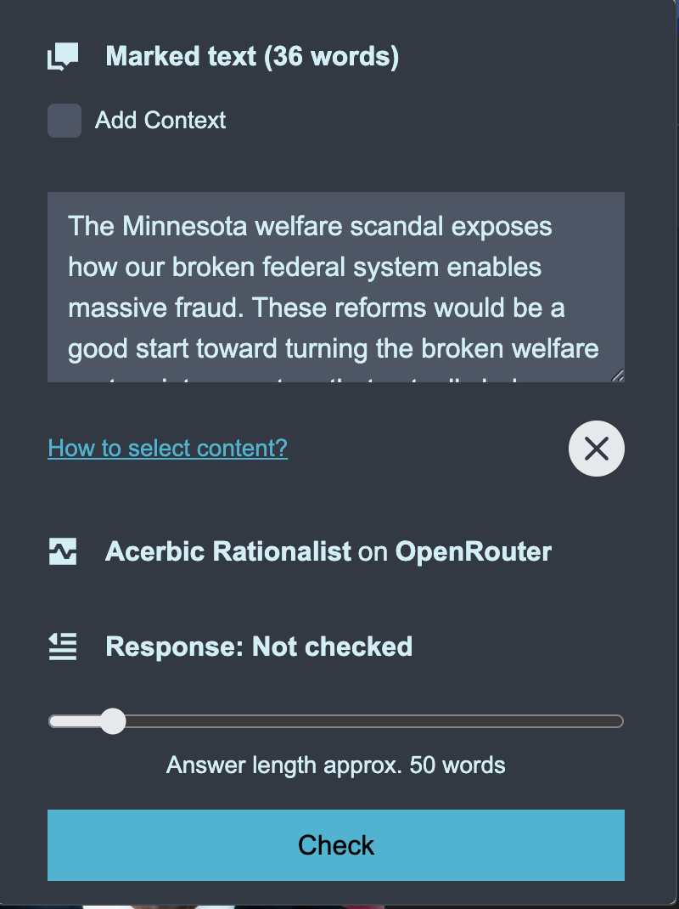

Fact Check Extension Documentation
Introduction
Welcome to the Fact Check Extension Documentation. This website provides comprehensive
documentation on how to install, configure, and use the Fact Check Chrome Extension.
How does this extension work?
The extension streamlines the process of verifying information found on the web.
-
Selection: The user selects text or an image on a webpage that they want to
check.
-
Processing: The extension sends the selected content, along with a
fact-checking command and any optional context provided by the user, to a Large Language
Model (LLM).
-
Result: The LLM analyzes the content and performs a fact check. The result
is sent back to the extension, which displays it to the user.
Context for better result
In some cases, the AI Model needs additional support to provide accurate judgments:
-
Recent Events: If the events are too new, they might not be part of the
model's training data.
-
Detailed Facts: Sometimes, more detailed background facts are needed to
correctly judge specific claims.
Are my requests stored?
-
Local Storage: This extension does not store any data outside of your
computer. All configurations and settings are stored locally in your browser.
-
Model Providers: Please note that Model Providers may store your requests.
If you want to avoid this, you can run models locally (e.g., using Nemotron or MiMo via LM
Studio or Ollama), though they may not always provide the same quality of answers as larger
cloud-based models.
How big is the impact on the environment?
AI consumes large amounts of electricity overall. However, this browser extension has a
relatively low consumption per check.
AI operators rarely provide precise information about consumption, but according to OpenAI, an
average query consumes about 3 Wh. That is equivalent to driving about 20 meters in an
electric car or boiling 30 ml of water.
Installation
Install from Chrome Web Store
The easiest way to install the extension is directly from the Chrome Web Store.
Fact Checker GPT Connector on Chrome Web Store
Install in Developer Mode (from ZIP)
If you want to install a specific version or contribute to development, you can install the
extension in Chrome's developer mode using a ZIP file.
Steps:
-
Clone repo:
https://github.com/caboe/fact-check-extention
-
Run the build command:
bun run build. This will build the extension in the
dist-chrome/ directory.
- Open Chrome and go to
chrome://extensions/.
- Enable "Developer mode" using the toggle in the top right corner.
- Click the "Load unpacked" button.
-
Navigate to the
dist-chrome/ folder within the extension's directory and select
it.
- The extension should now appear in your list of installed extensions.
Install in Firefox (Developer Edition / Temporary)
To run the extension in Firefox:
-
Run the build command:
bun run build:firefox. This will build the extension in
the dist-firefox/ directory using the Firefox-compatible manifest.
- Open Firefox and go to
about:debugging#/runtime/this-firefox.
- Click "Load Temporary Add-on...".
-
Navigate to the
dist-firefox/ folder and select manifest.json.
- The extension is now temporarily installed and ready to use.
Usage
Basic User Flow
Follow these steps to configure and use the extension:
1. First Run: After installing the
extension, open it for the first time. You will see a welcome message.

2. Configuration: Confirm the message to
proceed. You will be taken to the configuration screen to set up an endpoint.

3. Add Endpoint: Click on "New Endpoint".
This opens the dialog to add a new endpoint.
-
In this example, we choose the "openRouter" template, as it provides many
different models.
-
(Optional) Change the model to
google/gemini-3-pro-preview for better results.
-
(Optional) Web Search: To let the model search the web for current
information, append
:online to the model name (e.g.,
google/gemini-2.0-flash-exp:online).
- Enter your API key.
- If the model supports image as input, select the checkbox.
- Click "Save" to add the endpoint to your list of available endpoints.

4. Select Text: Once the endpoint is saved,
the extension is ready to use.
- Go to a website.
- Mark the text you want to check.
- Right-click and select Fact Check marked text.

5. Check: The extension popup will open.
Click on "Check".

6. Result: After a few seconds, the result
will be shown.

Fact Checking Images
You can also fact check images found on websites.
- Select Image: Right-click on an image you want to check.
-
Context Menu: Select 🖼️ Fact Check this image from the
context menu.
-
Check: The extension popup will open with the image selected. Click on
"Check" to proceed as usual.
(Note: Ensure the selected model supports image input, like
google/gemini-3-pro-preview or GPT-4o)
Configure Roles
You can define the persona and style of the fact-checker by selecting a Role.
Select a Role
In the "API Endpoint" section, use the dropdown menu labeled "Role" to select the desired
persona (e.g., "Scientist" or "Acerbic Rationalist").
Manage Roles
To create or edit roles:
- Click the settings icon (gear) next to the "Role" label.
- The Role Configuration window will open.
-
Built-in Roles: You can view the default roles but cannot edit them
directly.
-
Create Custom Role:
- Click "Add Role" to create a new role from scratch.
- Or click "Create from this" on an existing role to use it as a template.
-
Edit/Delete: You can edit or delete any custom roles you have created.

Using a local LLM
Using LM Studio
You can also use a local LM Studio instance as your fact-checking endpoint.
Steps:
- Install LM Studio on your system by following the official documentation.
- Start the server in LM Studio.
- Once the server is running, add a new endpoint in the extension configuration.
-
For the URL, enter the local address of your LM Studio instance, typically
http://localhost:1234/v1/chat/completions.
- Select the appropriate model if prompted.
- Save the endpoint.
Using a Local Ollama Instance
You can also use a local Ollama instance as your fact-checking endpoint.
Steps:
-
Install Ollama on your system by following the official documentation. Make sure, to allow
the plugin to access your Ollama instance by running
OLLAMA_ORIGINS=chrome-extension://* && ollama serve
- Once Ollama is running, add a new endpoint in the extension configuration.
-
For the URL, enter the local address of your Ollama instance, typically
http://localhost:11434/api/chat.
- Select the appropriate model if prompted.
- Save the endpoint.